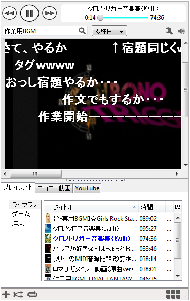

BGM Foxとは
- Firefoxのサイドバー上でニコニコ動画とYouTubeの動画をまとめて扱うことが出来るアドオンです．
- 名前から分かるようにそれらの動画をまるで音楽のように扱うことができます．
- 具体的にはサイドバー上で動画の検索，再生そしてプレイリストで動画を管理できます．
- 動画画面を開かなくても再生，シーク，音量の調節などは全て上のコントロールバーでできます．
使用上の注意
- ニコニコ動画へのツール経由のアクセスは原則として禁止されているようです（開発者ブログより）．
- 従って，使用は自己責任でお願いします．当アドオンを使用することで発生したいかなるトラブルに関して一切の責任を負いません．
- また，ニコニコ動画の仕様変更に伴い，当アドオンは使用できなくなる可能性があります．予めご了承下さい．
ダウンロード
既知の不具合
- Adblock Plusを入れているとYoutubeの動画が再生が出来ません．
- NoScriptを使っている方は nicovideo.jp, youtube.com, ytimg.com, suplik.net を許可しないと動画の再生ができません．
- ニコニコ動画，YouTube共に一部再生できない動画があります．
更新履歴
- 2009年10月17日 既知の不具合，機能ページ更新
- 2009年09月12日 サイトオープン